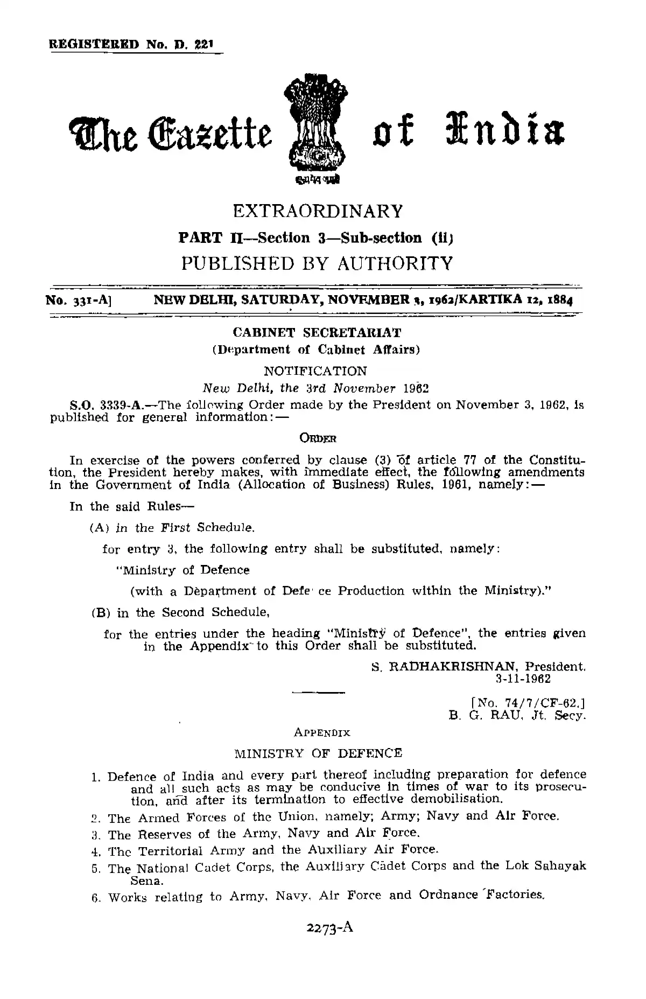
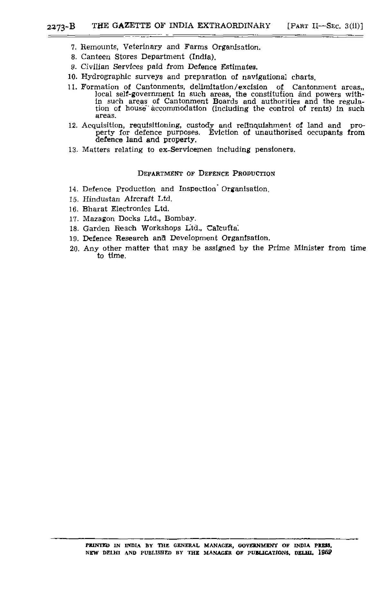

Amendment #11 (S.O. 3339-A, 1962)
2 changes: 1 to the First Schedule, 1 to the Second Schedule. 2 applied
The order, page by page
Page 1 of 2

12Schedule 1 › entry 3
- Ministry of Defence
- -. Department of Defence Production
applied at schedule 1 › ministry 3 in the Rules after #11
read hindi missing
Schedule 2 › Ministry of Defence
- MINISTRY OF DEFENCE
- 1. Defence of India and every part thereof including preparation for defence and all such acts as may be conducive in times of war to its prosecution, and after its termination to effective demobilisation.
- 2. The Armed Forces of the Union, namely; Army; Navy and Air Force.
- 3. The Reserves of the Army, Navy and Air Force.
- 4. The Territorial Army and the Auxiliary Air Force.
- 5. The National Cadet Corps, the Auxiliary Cadet Corps and the Lok Sahayak Sena.
and 16 more
- 6. Works relating to Army, Navy, Air Force and Ordnance Factories. 2273-A 2273-B THE GAZETTE OF INDIA EXTRAORDINARY
- 7. Remounts, Veterinary and Farms Organisation.
- 8. Canteen Stores Department (India).
- 9. Civilian Services paid from Defence Estimates
- 10. Hydrographic surveys and preparation of navigational charts.
- 11. Formation of Cantonments, delimitation/excision of Cantonment arcas local self-government in such areas, the constitution and powers within such areas of Cantonment Boards and authorities and the regulation of house accommodation (Including the control of rents) in such areas.
- 12. Acquisition, requisitioning, custody and relinquishment of land and property for defence purposes. Eviction of unauthorised occupants from defence land and property.
- 13. Matters relating to ex-Servicemen including pensioners.
- DEPARTMENT OF DEFENCE PRODUCTION
- 14. Defence Production and Inspection Organisation
- 15. Hindustan Aircraft Ltd.
- 16. Bharat Electronics Ltd.
- 17. Mazagon Docks Ltd., Bombay.
- 18. Garden Reach Workshops Ltd., Calcufta.
- 19. Defence Research and Development Organisation.
- 20. Any other matter that may be assigned by the Prime Minister from time to time.
applied at schedule 2 › ministry MINISTRY OF DEFENCE in the Rules after #11
read hindi missing, read page break
Page 2 of 2

How this document was read
Edits to the reading
| Date | By | Edit | Before → after |
|---|---|---|---|
| 13 November 2026 | claude | word corrected | |
| 13 November 2026 | claude | fields set | |
| 13 November 2026 | claude | word removed |
From the Government of India (Allocation of Business) Rules, 1961 and their amendments, as published by the Cabinet Secretariat (cabsec.gov.in), read by orgpedia. The readings of the older scanned gazettes have known gaps.